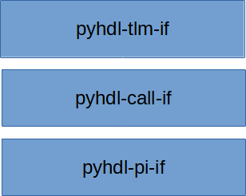

Overview
PyHDL-IF implements a procedural interface between Python and various HDL simulator APIs. The library focuses on simplifying the task of implementing interactions between HDL and Python at a variety of abstraction levels.
Procedural-Interface API
The procedural interface API is the lowest-level PyHDL-IF API. Because of this, it is also the most HDL- and simulator-specific.
There are two halves to the API:
Make an implementation of the Python C API available as a HDL-native API.
Make an implementation of the HDL-provided foreign-language interface available in Python.
Call-Interface API
The Call Interface API enables users to create pairs of communicating objects, where one object lives in Python, the other lives in HDL.
TLM API
The TLM interface implements a FIFO-based interface between Python and Bus Functional Models (BFMs).
Pytest Runner
The pytest runner enables execution of async Python tests directly from SystemVerilog testbenches. Tests benefit from pytest’s assertion rewriting for better error messages while running asynchronously within the HDL simulation event loop. See Pytest Runner for details.
Status and Roadmap
PyHDL-IF is still under active development. The information here attempts to capture the status of available features and a roadmap of planned future features.
Linux |
Windows (x86_64) |
MacOS (x86_64) |
MacOS (arm64) |
|---|---|---|---|
Yes |
Planned |
Planned |
Planned |
The native-compiled portions of PyHDL-IF are compiled according to the relevant Python version-specific requirements. If your favorite platform is not listed above and you would like PyHDL-IF to support, please file a feature-request ticket and note the platform and the simulator you typically use on that platform.
DPI |
FLI |
VPI |
VHPI |
|---|---|---|---|
Yes |
Planned |
Planned |
Planned |
Supporting HDL calls to the Python API allows HDL to interact with Python as if it was a Python extension by calling the Python C API.
DPI |
FLI |
VPI |
VHPI |
|---|---|---|---|
Yes |
Planned |
Planned |
Planned |
Support Python calls to an HDL API allows Python to interact with simulator APIs as if it were a shared library loaded by the simulator. For example, support for VPI allows a Python module to walk through the design design hierachy and implement system tasks that the HDL can call.